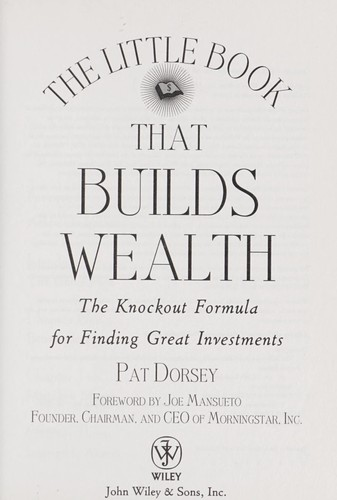

帕特·多尔西（Pat Dorsey）曾任晨星公司（Morningstar）股票研究总监，负责管理超过一百位分析师的团队，后创办了多尔西资产管理公司（Dorsey Asset Management），专注于基于经济护城河理论的长期投资。《股市真规则》（The Little Book That Builds Wealth）于2008年由威利出版社（Wiley）出版，是一本将经济护城河（Economic Moat）这一概念从模糊的比喻转化为系统性分析框架的著作。沃伦·巴菲特（Warren Buffett）最早在致股东信中使用"护城河"一词来描述具有持久竞争优势的企业，但巴菲特从未对这一概念给出学术性的分类体系——多尔西的贡献，正是在于将"护城河"从一个直觉性的意象发展为一套可操作的分析工具。
多尔西在书中将经济护城河归纳为四种基本类型。第一种是无形资产（Intangible Assets），包括品牌、专利和法规许可——蒂芙尼（Tiffany）的品牌溢价使其能够以远高于原材料成本的价格出售珠宝，制药公司的专利保护则在特定期限内构筑起法律层面的进入壁垒。第二种是客户转换成本（Switching Costs）——企业软件的更换意味着巨额的培训费用、数据迁移风险和生产力损失，这种黏性使得现有供应商即便在价格上不具优势，也能长期留住客户。第三种是网络效应（Network Effects），即产品或服务的价值随着用户数量的增加而增加——Visa的支付网络越庞大，对商户和持卡人就越有价值，新进入者要复制这一网络几乎不可能。第四种是成本优势（Cost Advantages），包括规模经济、独特的资源禀赋或优越的地理位置——一家靠近石灰石矿的水泥厂，因运输成本极高而天然排斥远距离竞争者。
多尔西特别强调了一个容易被忽视的要点：并非所有看似强大的企业都拥有真正的护城河。优秀的管理团队、畅销的产品、较高的市场份额——这些因素单独来看都不构成护城河，因为它们都可以被竞争对手模仿或超越。真正的护城河必须是结构性的、持久的，它嵌入企业所处的行业格局之中，而非依赖于某一位CEO的个人才能或某一款产品的短暂热度。多尔西同样指出，护城河的存在并不意味着任何价格都值得买入——再好的企业，如果买入价格过高，投资者的回报也会令人失望。护城河确保的是企业能够长期创造超额回报，但投资者的回报还取决于买入时的估值水平。
对于投资者而言，《股市真规则》提供的最核心的价值，是一套判断竞争优势是否"持久"的分析语言。在评估一家企业时，投资者不应仅仅关注当前的财务表现，而应追问：这家企业的盈利能力为什么能够持续？是什么结构性因素阻止了竞争对手蚕食其利润？这种优势在五年或十年后是否仍然成立？多尔西的框架与迈克尔·波特（Michael Porter）的五力模型在智识上一脉相承，但它的表达更为简洁直观，更适合投资实践者在日常研究中反复使用。这本书篇幅不长，但信息密度极高，是理解长期投资中"质量"这一维度最清晰的入门读物之一。